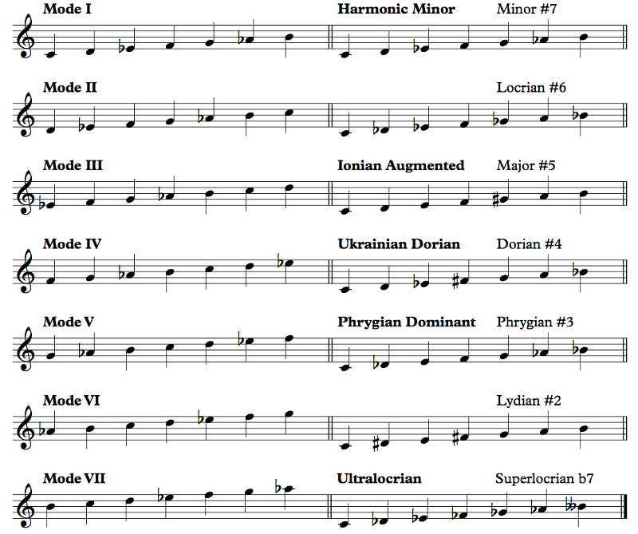
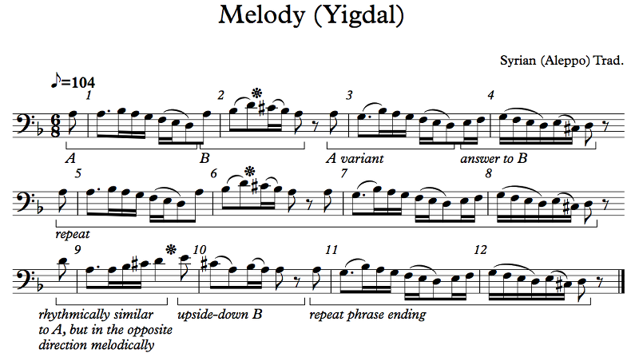
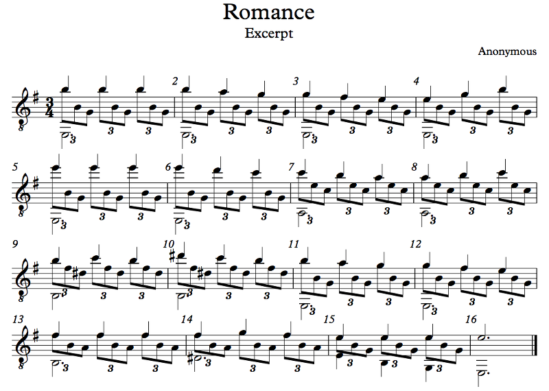
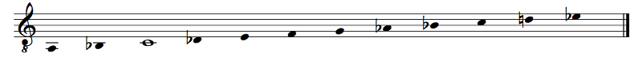
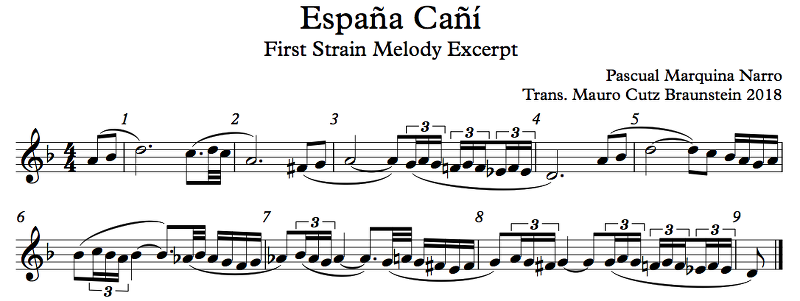

By now you should be familiar with the harmonic minor aspect of the minor mode: to accommodate the major V chord in minor, we say that the principal harmonies of minor come from the "harmonic minor scale", but it's not really a scale; it's just a name for using the V chord (and associated chords like the viio) in minor. Well, what if we do think of it as a scale? Common Practice music does not do this, but plenty of people do. The "problem" is that there's that awkward augmented second between the b6 and the 7, but I put "problem" in quotes because this is not a problem at all in a melody. It's bad for smooth voice leading, but melodies don't need smooth voice leading. The modes of the harmonic minor scale, then, feature this augmented second. Sometimes the interval can be used to great effect, but sometimes it makes the scale kind of unusable. So here are the modes:
Example 7.45
Because I don't know of any names people have bothered giving these scales. Just because you can string 7 notes together on paper doesn't mean that they're worth playing (at least in the Western system of extended tonality), and in this case, only some of the named ones are worth playing. Maybe also Lydian #2. You could disagree with me and write something great in one of the other modes. Go ahead. Seriously, go ahead; you'll actually be advancing music in general.
The reasons why many of these modes are not worth playing are fairly obvious; hear for yourself in the . If we look at harmonic minor, the augmented second doesn't actually break anything, and in fact, the b6 is useful in the iv chord and the 7 is useful in the V chord. Mode II is locrian anyway, so it doesn't have a 5; we've already talked about the difficulties of locrian. Actually, Dust to Dust (Example 7.34) doesn't use the 6th degree at all, so you could even say that it's in locrian #6, because it's not not in locrian #6, right? Interestingly enough, this mode is used in Arabic music, where it's called maqam Tarz Nawin, but we'll talk about Arabic music later on. Mode III, Ionian Augmented ("augmented" generally just means #5) doesn't have a 5 either, and it needs one. Mode VI is actually usable, but you're going to end up really wanting that 2 in chords (unless you take an atonal approach; nothing wrong with that), so you won't get a particularly special sound out of the 1 - #2 augmented second. Mode VII is built off of the altered tone; if you followed the pattern, it would be mixolydian #1, but that obviously doesn't make sense, so instead we have ultralocrian, or superlocrian b7. We haven't run into superlocrian with that name yet; it's just locrian b4, also known as the altered scale that we saw in the jazz section of the previous chapter. Well, here it gets a completely pointless alteration, a lowered 7th degree. Superlocrian already has a b7, so this scale has a bb7. I think it actually has possibilities if you don't try to force harmonies on it, but the augmented second between the bb7 and the 1 is pretty much not going to be very nice.
So that leaves harmonic minor, Ukrainian dorian, and phrygian dominant. And it turns out all three are used in Jewish music, some more than others. And they're lots of fun! So let's hear examples.
You wouldn't generally make a distinction between minor and harmonic minor, except that the upper tetrachord has a different behavior in each kind of minor (minor, aeolian, harmonic). In regular minor, the 7th scale degree is variable and the 6th is altered to prevent an augmented second; in aeolian, the 7th degree is left as a b7 and there's no leading tone; in harmonic minor, the 7th is raised and the augmented second is not avoided. It's actually pretty rare for Western pop music to be in harmonic minor, which relates to a common misconception. Harmonic minor is generally considered an aspect of minor, not an independent scale on its own. Music in minor can be said to be using this aspect when there are V and viio chords, but that's a bit silly since there could also be bIII and bVII chords. We say that the harmony in minor comes from harmonic minor, but that's not really true, right? On the other hand, melodies come from melodic minor (again, not really true), another aspect of the minor mode.
But here we're talking about harmonic minor as an actual independent entity, and while it's largely interchangeable with the other minor modes, using it on its own means you do get that augmented second between the b6 and 7. It's a sound that Common Practice composers did not like, and popular musicians usually avoid it too. Jazz musicians stay far the hell away from it. The reason? It sounds very "ethnic", whatever that means. It sounds vaguely Middle Eastern or Eastern European or Romani or something like that.
We've already seen the first example in Chapter 4 (the markings are from the melodic analysis, which you can read about back in Chapter 4):
Example 4.21 (again)
The thing to pay attention to this time is the augmented second, which shows up in measures 2, 6, and 9. That's only three of them in this entire 12-measure tune, so you can see that it's just necessarily a huge deal. Generally, the upper tetrachord gets less action than the lower pentachord, so there's nothing too weird about that. Note that measures 4, 8, and 12 also have a C#, but it's not making an augmented second with a Bb, so it's just using the usual features of minor. Measure 10 has both a C# and a Bb in close proximity, but there isn't a scalar line connecting them, so you hear C# - A, a major third, and Bb - A, a minor second, but not C# - Bb, an augmented second.
Because it doesn't have to be. For newer composers, modes can be novelties; they might feel a sort of pressure, musically, to hammer the mode as much as they can. But if you view the mode as... just normal, then you can relax and write music that doesn't try too hard. Subtlety can be good!
For our next example, we have a very popular guitar piece of unknown and apparently disputed authorship, Romance (here's the complete sheet music). The melody is in the high notes; sing that and listen for the augmented second:
Example 7.46
No.
As you can hopefully see, this song has an A section and a B section. The A section is in E minor, and then the B section is in E major. Each one is repeated, and then the A section plays again. This is a very common type of binary form called rounded binary, which is basically this, AABBA. The B section is usually in a closely related key to the A section. In classical music, the B section tends to be in the dominant for pieces in major and in the relative major for pieces in minor. In more modern short forms like marches and whatnot, we often see the B section in the subdominant for pieces in major and the parallel minor for pieces in minor, and that's what we have here. Of course, you're welcome to do whatever you want; I once wrote a march where the A section was in Bb and the B section in Gb, an m6 away!
The harmonic minor aspect here is only on display in one measure, measure 10. I'd say that Spanish music shares the "ethnic" roots of the people we were talking about earlier, and we'll see some examples of that; however, I don't really hear the "ethnic"-ness of this particular augmented second. Again, the effect is kept fairly subtle. While you might think of the augmented second as the characteristic interval of harmonic minor, the fact is that harmonic minor is just regular minor where this interval is still there. I'm sure Anonymous didn't set out to write his/her/its/their Romance in harmonic minor; he/she/it/they probably just wrote it in minor and kept the augmented second in because it sounded better than the alternatives.
Let's go to something far less subtle:
This is an eminently great scale. It's called "phrygian dominant" because it's phrygian but where the tonic seventh chord is a dominant 7th, meaning that the scale contains 1 3 5 b7. There's also lydian dominant, which is lydian b7; we'll see that one shortly. This scale is interesting in part because it sounds very different from major and minor and yet is perfectly stable and usable, with its own harmonic rules. I actually think of it as more fundamental, in a sense, than phrygian; phrygian to me is phrygian dominant b3. There's not a lot of music written in phrygian, but there is a lot of music in phrygian dominant. It also has the name freygish in Yiddish, which just means "phrygian", and in Hebrew it's called Ahavah Rabbah, the first two words of a blessing on Saturday Morning that traditionally is chanted in... not quite this scale, actually. There's a bit of an interesting thing going on; the prayer mode called Ahavah Rabbah uses the Ahavah Rabbah scale, but it also uses some stuff outside it. It's a bit confusing. It's even more confusing because lots of people these days don't actually chant the Ahavah Rabbah blessing in this scale and sing some melodies in minor instead. So let's see if I can find a better use!
The following is Rabbi Shlomo Carlebach's melody for the traditional poem Adir Hu. Try to sing it before listening to the video, but then do listen to the video, especially the beginning before the melody comes in!

Example 7.47
Sure is! This is the sound of phrygian dominant. Why this mode specifically? Well, it turns out that, like major and minor, it's a very stable mode, more so than phrygian itself. Major works by resolving two leading tones, 7 to 1 and 4 to 3; minor tries to copy this by raising the 7th, but 4 - b3 is less satisfying than 4 - 3. Phrygian has another leading tone, b2 that resolves to 1, but it also lacks the 4 - 3. Phrygian dominant, on the other hand, has both the 4 - 3 and b2 - 1, and as a result, cadences in this mode are quite satisfying. We'll talk about these later, but a cadence with these two leading tones resolving is called a phrygian cadence, after the original medieval use of the phrygian mode. In Common Practice music, which uses only major and minor, this cadence is actually a phrygian half-cadence, going from iv6 to V. Again, we'll see this in later chapters. In phrygian dominant, though, we can use bII - I or bvii - I or even vø7 - I. We'll talk about harmony in phrygian dominant in later chapters as well.
That's all improvised! I think. Carlebach is no longer with us (zichrono livrachah -- may his memory be a blessing, also abbreviated z"l) so we can't ask, but improvised melodies like that are a genre in Jewish music. The actual melody is the one I excerpted; the improvised chanting at the beginning and the end of the recording is just because Carlebach wanted something else to fill out the recording. When people sing this melody, and they do, they don't sing that bit.
I think it gives a good picture of the feel of the mode, especially the harmonic patterns often used. It's much less formal than a lot of cantors use for regular prayers during regular services, but it kind of gives a similar feel, especially when he goes low to the b7 before resolving back on the 1.
There are a couple of things I want to point out about this tune and this mode. First, note the key signature. What key are we in? Five flats is either Db major or Bb minor, and while the answer doesn't show up until a few bars in, we can see that right from the first note we have something not in the key signature! The complete scale is found between measures 3 and 4, going down: Bb Cb D Eb F Gb Ab. You know Bb is the tonic because the main notes here are D and F, but with the Gb emphasizing the F, the D doesn't feel like it can be the tonic, and yet the F going to Eb then D into measure 2 feels like a kind of melodic resolution to the D. This might be D minor, except that the Gb kind of throws that off. When we resolve to Bb at measure 4, that feels quite safely like home. (Or we could have listened to the improvisation earlier that made the tonic quite clear!)
We could. I personally think minor fits the mode better, but the truth is that phrygian dominant is neither major nor minor (unlike, say, dorian, which is clearly minor, and mixolydian, which is clearly major). Similar to phrygian dominant is mixolydian b6, which goes 1 2 3 4 5 b6 b7, and I'd say that is a major-type scale, but phrygian dominant, 1 b2 3 4 5 b6 b7, is not. You can disagree with me on this. I think the 1 2 3 trichord is characteristic of major and the 5 b6 b7 1 tetrachord is characteristic of minor, and the lower one is what defines the scale; in phrygian dominant, the 1 b2 3 trichord isn't characteristic of either, so the upper tetrachord wins. Mixolydian b6 has the 1 2 3 trichord and therefore it's major. Again, that's just how I feel about these scales. If you have a better way of thinking about it, then you should use it!
Notice how in measure 1, there are two F's slurred, not tied, together? Melisma is when one syllable, like "hu" here, is sung for more than one note. In Chasidic music, melismatic syllables are often sung with added consonants, so you'll hear "huwuwu" for "hu", or "hiyiyi" for "hi" (that's "hi" pronounced like the English "he", not the English "hi"). Carlebach borrowed this convention from Chasidic music despite not being a Chasid himself. Orthodox Jewish music these days is actually strongly influenced by Chasidim, so it fits the theme. As for "karoyv", well, you see, different people pronounce Hebrew sounds differently. One of the more traditional ways of pronouncing the "o" vowel in Ashkenazic (Eastern European) Judaism is "oy" instead of just "o". I learned modern Hebrew in school, so I say "karov", but various communities of Ashkenazim will say "karoyv". I prefer to transliterate the words as I say them, not as Carlebach says them. With "kel", the situation is a bit different. Orthodox Jews don't pronounce certain names of God outside of actual prayer, one of which is "El"; they'll say "kel" instead. The theology is way beyond our scope, so never mind exactly why. I don't hold to that myself. You can pronounce it however you want.
I'm kind of talking a lot about Judaism here, but it's because I think it's important to see how music is shaped by cultural forces. Every culture has its own ways of approaching music. If you're a singer in a classical choir, for example, you'll almost certainly be called upon to sing a Mass in Latin at some point (I've sung a few, including one by Mozart and one by Byrd), or maybe some Italian opera, and part of the time is going to have to be spent on just the words themselves, how to pronounce them, how to properly emphasize them within the piece, stuff like that. Understanding the cultural conventions behind why those words are arranged the way they are gives you a fuller picture.
To that effect, I should point out what Carlebach is doing here, because it's very different from our next example. Carlebach's schtick is to take just one or two lines from something and make a simple melody out of them. It's easy to sing along to them, because if you participate in Judaism enough, the lines are already familiar to you, and the melody just repeats. The text of Adir Hu actually contains an acrostic of the entire alef-bet: Adir hu, bachur hu, gadol hu, dagul hu, hadur hu, vatik hu, etc. The traditional melody for Adir Hu, an old German melody probably about a thousand years old, has room for all of these, so you can properly sing the poem. So you might sing this: "Adir hu, adir hu, yivneh veito...", then "Bachur hu, gadol hu, dagul hu, hadur hu, yivneh veito...", and so on. You can't really do that with Carlebach's tune. To sing Carlebach's tune, you don't need to know a lot, just the three lines of the song. You don't need to carry a prayerbook around, especially if you grew up singing this song since you already know the chorus but probably don't remember the entire acrostic.
In contrast, let's look at an actual Chasidic tune. This is the Chabad melody for Azamer Bishvachin (performed here by Nitsan-Khen Razel), a 20-verse piyut (poem) in Aramaic full of obscure Kabbalistic references that's sung on Friday nights in some communities, presumably while waiting for the food to get cold because that's what's going to happen.

Example 7.48
While Carlebach liked to spend a long time singing just two lines, sometimes you need to spend a short time singing twenty, and that's this song. I honestly don't know how Razel remembered all the words, to be honest. There's a big projector screen behind him with the words; I'm assuming there was another one in front of him too, because there are a lot of them!
Putting aside all those words, this melody does a few very interesting things. First, if you listen to the video, you'll notice that he doesn't do exactly what I wrote. He takes breaks, does the ending more slowly, stuff like that. That's because this is an existing melody used by Chabad Chasidim the world over (and they are the world over), and Razel was just putting his own spin on it.
Take a look at measures 4 and 8. We're in E phrygian dominant (which you should be able to tell by listening; never mind the lying key signature), but here's a C#. Chromaticism? Actually... yeah, kinda, but what this is really doing is tonicizing the D, the b7. This was a common device in traditional prayer chants in this mode, often at the beginning of a section, and if you look at the recitatives of famous cantors, you can see it in use. Nowadays it's quite rare (I looked and couldn't find an example), but it shows up in this melody! The b7 below the tonic is often a resting point for the melody before moving on to the tonic, and in some descriptions of the Ahavah Rabbah mode, the scale isn't just phrygian dominant but also extends down and up, like this:
Example 7.49
This scale doesn't repeat at the octave! But the fact is that this scale is kind of a general suggestion and a description of what cantors (used to) actually do. It was (and still is) common to add embellishments to recitatives and chants in the Ahavah Rabbah mode that were not part of the phrygian dominant scale, and some of those embellishments made it into this description that's somewhat common in literature but not so much in real life.
Back to Azamer Bishvachin, this tune does another very unusual thing, in measures 9, 11, 13, and 15. It goes to the b3! THe b3 is not in the scale, but here it's used and even emphasized, with the 2 — also not in the scale — as a helper tone. Even the harmony is a bit confusing there. That's why I like this example. It's not typical; it shows some of what you can do by relaxing the constraints of the scale. As I mentioned in the previous paragraph, it's common to add embellishments to phrygian dominant that aren't in the scale — most commonly, a short modulation to the 4, either minor, major, or Ukrainian dorian (which we'll talk about shortly) — but modulating like this to the b3 is not usually done. How does this happen? The answer lies in the ending of the previous phrase, measures 4 and 8. These tonicize the b7, and the most natural thing in the world is to go up a fourth to a new key, so... that's what the melody does! From the b7, it goes up to the b3, even though the P4 above the b7 isn't actually in the scale. The video's description says that this melody is by a Rabbi Hillel of Paritch. I've never heard of him, so I have no idea what he was thinking here. Maybe he just wanted to do something a bit exciting. I think it worked.
Sometimes, the mode is not clear. A major mode and its relative minor often have this kind of relationship, where it's not entirely clear if the music is in one mode or the other. This is actually very common in pop music with vi - IV - I - V chord loops, also known as i - bVI - bIII - bVII. Which is it? In the case of phrygian dominant, the mode can be confused with its relative minor as well, a fourth up. You should try singing or playing this one (there are plenty of videos on YouTube as well), A La Una Yo Naci:

Example 7.50
We actually saw the second four bars of this, as a piano arrangement, back in Example 6.25.
Because it's actually not clear what the key is. Play the first four bars: we're obviously in F minor. Now play the second four bars: we're obviously in C phrygian dominant. This key confusion is actually somewhat common in Jewish and Andalusian music. Israel Goldfarb's Shalom Aleichem does this (the opening is weird; the tune starts at about 0:45), as does the very famous traditional song Havah Nagilah (this one's also weird and the Hebrew is bad, but that's YouTube for you). Actually, speaking of Spain, Spanish music often uses a variant of phrygian dominant:
Phrygian dominant is the fifth mode of the harmonic minor scale. Well, the Spanish scale is the fifth mode of the melodic minor scale... in a sense. In another sense, it's actually phrygian dominant. Let's take a look (you can also play this scale in the ):

Example 7.51
The Spanish scale has a variant third degree (and sometimes second, but mostly just third). Melodic minor has a different form depending on whether you're ascending or descending, though by now you hopefully realize that it's not quite so simple. The "default" minor has b6 and b7, but we raise those notes to 6 and 7 in the ascending version; we have 5 6 7 1 going up and 1 b7 b6 5 going down. Similarly, the Spanish scale goes 1 2 3 4 going up and 4 b3 b2 1 going down, but the "default" is phrygian dominant, with the b2 and 3. Of course, it's not quite so simple. When the harmony is a I chord, the 3 is used, with the 2 used if necessary to prevent augmented seconds (much like the 6 in minor). At other times, though, like in bIII or bII chords, the b3 is used, in part to prevent augmented seconds with the b2, but also because the b3 is an important part of the sound. This is a realization of the stereotypical Andalusian cadence, which goes iv - bIII - bII - I:

Example 7.52
This can be analyzed either in E Spanish or in A minor. I used the key signature for A minor because I think that's actually more common in this type of music, but I don't know, maybe not. You can see, though, how the conventions are followed. E Spanish has a "default" G#, which you can see in the E chord, and a variant G natural, which you can see in the G chord.
There are three voices here, right? The upper voice is actually an arpeggio playing three notes, so you can actually think of them as three separate voices, for a total of five. In the first measure, then, the fifth voice has a low A, fourth voice has a middle A, third has an E, second has an A, first has a C. Well, I originally had just the top four voices, but I decided I wanted more power so I added the fifth voice at the bottom. Then I decided that I wanted it to have a little melody, and the result is what you see here.
As for the bIIGer+6, which is not actually an F7 despite the chord symbol, the small problem is that, classically, augmented 6th chords happen only on the b6, but they can totally happen on the b2 as well. There's just no standard Roman numeral analysis symbol for that eventuality. Hopefully the way I wrote it is clear. On the other hand, pop chord symbols don't recognize aug6 chords at all, representing them enharmonically as dominant 7ths, hence the F7. However, that chord is really just the Dm chord of the previous beat with a chromatic passing tone, so maybe it doesn't even need to be a separate chord! You can analyze it that way if you want. The bvii chord, actually, isn't technically part of the Andalusian cadence, but it's a common enough variation of the bII chord that I figured I might as well include it. When we talk about phrygian dominant harmony we'll discuss this in more detail.
Let's look at an example from real music, shall we? This is La Virgen de la Macarena, a famous Spanish song of uncertain authorship that features a strong bass intro and a lovely melody, often recorded by trumpet players such as Arturo Sandoval. I've attempted to roughly transcribe some of the instruments in the intro below; sing through the melody in the bass:

Example 7.53
No, it is not. It's far cooler.
This piece is in G Spanish, and I've used the upbow symbol (the downward wedge) to highlight the 3's (B naturals) and the downbow symbol (the square-ish thingy) to highlight the b3's (Bb's). The 2 is really only used as a passing tone when absolutely necessary, so we don't even need to consider it here. If you just look at the bass melody in the first four bars, you don't see any 3's, but you do have a complete phrygian scale descending, which might suggest to you that this melody is in phrygian. O stone, be not so! While the melody is all in phrygian (except the rather ornamental B natural at the pickup to 5), the harmony is decidedly in the Spanish scale. The characteristic feel of this scale is, in fact, the phrygian melody with its b3 contrasting with the major I chord and its 3. Phrygian dominant doesn't have that. You can consider the 3 to be the "default" in the Spanish scale, but the b3 is essentially the most characteristic tone!
Let's look at another example, Pascual Marquina Narro's extremely famous España Cañí (here's a nice rendition). The intro is incredibly well-known; you'll probably recognize it when you hear it. I want to focus on the melody in the first strain, though, which you should try to sing — try, because it's not so easy:
Example 7.54
España Cañí is a pasodoble, which one could loosely translate as two-step, but it really refers to a bullfight march. America has circus marches; Spain has bullfight marches. Same kind of deal, and it's a very similar musical structure as well. When you listen to the entire piece, you can easily tell where the trio begins, the kind of lighter bit of the music, which is a fourth up in major, has a nice baritone melody while the upper woodwinds do their thing (called an obbligato), just like any standard march. Just about the only difference between España Cañí and your average Sousa march is the mode, as well as some of the rhythmic gestures reminiscent of flamenco music (specifically all the triplets), the declamatory trumpets with the bravado one would traditionally associate with bullfighting, etc.
So let's take a look at this little melody. In the first four bars, we have a very straight Spanish scale on D. Note the F# in the pickups to 3 and the F naturals in the descending triplet run. The contour here is also very simple: start going up to the higher octave, down to the dominant (anyone else get a pentatonic feel in that pickup to 2?), then from the dominant down to the tonic. The second half changes the formula a bit. You can tell right away that 5 is different from 1 (if you listen to the piece) because the harmony is very different, and indeed, instead of going down to the A, we only go to the Bb. But then... Ab? That's not in the scale! We've actually done a little modulation to G here, and the Bb - Ab - G is a bIII - bII - I in G, most of an Andalusian cadence. Except that the G chord is actually minor, not major; it's i, not I. So we're not actually in G Spanish either; this is G minor, with the E and F# being part of the melodic minor aspect! This takes us four bars, and with the end of that fourth bar, we quickly come back down to the D, which is also the first note of the next section. The second half of this melody, then, is a kind of reharmonized and reworked version of the first half.
Interesting bit: the second strain, which happens after the reprise of the intro following the excerpt, is actually up a fourth to G Spanish, which ratchets up the excitement. The trio happens later on after a very declamatory trumpet figure, and it modulates up a fourth too, this time to C major. I think of the Spanish scale as being kind of bubbling with excitement compared to the more relaxed major and perhaps darker minor. Spanish music uses all three in contrasting ways, which makes for a richer experience than simply going between major and minor like the Western canon. Phrygian dominant, and the Spanish scale especially as a variant of it, should (in my opinion) be considered a fundamental mode like major and minor, since it's open to functional harmony of a different kind from the harmony in major and minor. We will talk more about that later.
For now, though, we have one last useful mode of the harmonic minor scale:
I don't know why this scale, dorian #4, is called Ukrainian, but one thing that is clear is that Jewish music used the same scales that the people around them used, and when lots of Jews lived in Eastern Europe, including Ukraine, this was one of the scales they used. This scale is fun but kind of limited harmonically because it doesn't have a 4. In liturgical music, where it's called the Mi Sheberach mode (after a prayer on Saturday morning that uses it briefly), use of the mode is limited mostly to short modulations, not entire chants or melodies. I only know one chant that's actually in this mode, and it's only for a few isolated lines during the High Holidays.
On the other hand, it happens fairly often in klezmer music, Yiddish theater, etc. Here's Hudl Mitn Shtrudl, from the Milken Archive of Jewish recordings (the composer is apparently unclear but appears to be Adolf King), and the video has the translation so that you don't have to wonder what the song is about: dude's — sorry, Dudl's — sexy wife Hudl makes a delicious strudel that brings all the boys to the yard. A deep analysis of the lyrics will reveal that Hudl's delicious strudel is actually a metaphor for strudel. There are layers of meaning, representing the layers of filling in the strudel. It's a deep pastry. Anyway, here's a taste. Of the song, I mean, not the strudel. (Hungry yet?)

Example 7.55
Feh. I had transcribed a different recording first because I hadn't seen the Milken Archive recording that I was originally looking for. I actually like this version of the melody, but I like the Milken version of the performance (and it has the translation so that you can understand how great this strudel is even if you don't speak Yiddish). Make of that what you will. Both of them have kickass clarinet solos, so there's that!
Anyway, the melody! Oy, the melody. It outlines the Mi Sheberach (Ukrainian dorian) scale very well. Like other Jewish and Eastern European music using scales with augmented seconds, this piece does not shy away from that interval like music that uses the Spanish scale. In this mode, the 5 is somewhat tonicized due to the #4 and 6. See, in minor, there's a b6, so since there's a 6 here instead, it suggests a minor scale on the 5. The problem is that there's really nowhere else for it to go. This entire melody uses mostly just the i chord, Fm, because the scale is just not stable enough to easily support a more varied harmony without collapsing into minor on the 5 or phrygian dominant on the 2. The verses have more harmony, but they're in major, not Mi Sheberach. That said, you can still use v and II chords and even V chords (altering the 7th of the scale).
What you kind of can't do is use the b6. I mean, you obviously can do whatever you want, but if you have the b6, you now have #4 5 b6, and that's two half steps in a row (making the scale cohemitonic).
You know, I just don't think it sounds very good. Diminished thirds are dissonant intervals, which is why the augmented 6th chord is used in the first place; it has a lot of pull to the dominant because the b6 and #4 both tend towards the 5. But you don't really want the 5 to be a deep hole in the ground you can't get out of, right? Or maybe you do, because the Hungarian minor scale does that. We'll touch on scales like that a bit later. Generally, though, too many half steps in a row confuses the tonality of the scale. If you hear #4 to b6, do you hear it as a diminished third (which it is) or as a whole step? We don't usually have this problem harmonically, hence the augmented 6th chord, but melodically we do. So I think it's best to generally use a 6 when you use a #4. Calling this scale Ukrainian dorian is apt because of that 6; I'd say that the characteristic tones are the 6, #4, and b3, in that order.
The other modes of the harmonic minor scale are pretty much unusable. You can use them if you want; good luck to you if you choose to do that! So we'll move on to a set of scales we've already talked about as chords: